TUTORIAL: Remove Files From GitHub
If you’ve every tried to remove files from a GitHub repository by dragging them to your Trash or Recycle Bin and then doing a git push, you know that this doesn’t work.
After having a GitHub account for 18 months and knowing just enough to get by, I spent 10 days focusing on Git, the distributed version control system that GitHub’s built on top of. I figured out how to properly delete stuff but also realized not only how Git interacts with GitHub but also how Git itself actually works. Knowing these things will help lead you to GitHub guru-ness.
Table of Contents
- Assumptions & Tips »
- A simple explanation of how Git & GitHub work »
- Prevent files from being uploaded to GitHub with .gitignore »
- The right way to remove files from GitHub »
- The right way to remove directories from GitHub »
- What to do if you’ve already deleted files from your machine and pushed things to GitHub »
- Further Reading »
- Conclusion »
Assumptions & Tips
I’m assuming a few things:
- that you have a Git repo on your computer and it’s been uploaded to GitHub.
- that you know how to access this repo from the Terminal.
- that you know the three Git line commands that work together to upload your code to GitHub:
git add,git commitandgit push.
Some tips:
- I’ll be using the Mac Terminal for this tutorial. Except for the section where I create a
.gitignorefile, everything mentioned here should work cross-platform. - Feel free to follow this tutorial using your own repo, but proceed with caution if you do. I’ll be deleting stuff and I don’t want you to mistakenly delete something as you follow along. Instead, feel free to download this repo from GitHub and use it if you want to type and follow along.
- If you opt to use your own repo while reading this tutorial as a whole, it’s best that it be as clean as possible. Go to your Terminal and type
git status. If you get a message saying that there’s nothing to commit, keep going. If you get a message saying that some files need to be added or removed, you may have to clean up your repo a bit. The steps mentioned in this part of the tutorial may help you. - If your Terminal window starts getting full and you want to clear it, hit Cmd K. Note that everything you’ve typed will be gone once you do this and you may have wanted to save it somehow for future reference. If so, make sure you save stuff before hitting Cmd K.
Before we jump into the Terminal, we need to be clear about the differences between Git and GitHub, as well as how they work together.
A simple explanation of how Git & GitHub work
Git is the software on your machine that tracks changes to your code repository and retains its past versions. You upload the repo and its changes to GitHub, the online web service that provides a feature-rich graphical user interface to manage the repo.
If you’re only Git education up to this point is doing what GitHub tells you to do when you setting up a repo, you should be familiar with git add. You use it as part of a command sequence in Terminal when you want to add files to or change files on GitHub.
So if you have a file called “myFile.html” that you’ve just created or changed and you want to upload it to GitHub, the sequence would look something like this:
git add 'myFile.html'
git commit -m 'added myFile.html'
git pushThe sequence for deleting files is the same, except for one change: you replace add with rm, which is the UNIX command for removing things.
So if you wanted to remove “myFile.html” from your repo, the sequence would look something like this:
git rm 'myFile.html'
git commit -m 'removed myFile.html'
git pushWhy is all this necessary? Because Git views adding and removing things from your repo as a “change.” And while Git can detect these changes, it has absolutely no idea what to do with them: it’s your job to tell Git what to do with them.
We just deleted a file from our repository in the last command sequence with git rm, meaning we made a change to our repo. Then, by “committing” this change with git commit, we “told” our repo to remove it. Lastly, we threw our repo up on GitHub with git push: GitHub saw that a delete was committed to the repo during the push and, as such, deleted the file.
The “changes” concept is key to understanding the Git/GitHub relationship. Git’s job is to “track,” or “watch,” every single, solitary change that occurs inside your local repo…adds, deletes, individual file content updates…whatever. GitHub only changes what your local Git repo tells it to change. So in the case of deletions, if you don’t use git rm to tell Git to remove a file, Git can’t tell GitHub to remove it.
While you may be familiar with git add already, let’s do one for good measure. For this tutorial, we actually need to use it to create a certain file called .gitignore.
Prevent files from being uploaded to GitHub with .gitignore
If you already know which files you don’t want uploaded to GitHub and want to avoid uploading them by mistake (meaning you’ll never have to remove them with git rm), list them in a .gitignore file.
Let’s create this file and tell it to ignore all .DS_Store files, which appear in Mac OS X directories anytime changes occur inside of them. Doing this doesn’t remove .DS_Store files from our repo (we’ll get to removing files shortly), it just prevents Git from tracking them. If Git can’t track them, Git can’t upload them to GitHub.
We’ll create our file with nano, Terminal’s built-in text editor (Windows users should use Notepad outside of their command line tool to create this file, add the content described in step 4, save it in your repo, then start following the directions at step 8).
- First, let’s look at our Git repo on GitHub. Mine’s called “yourGitProject” for this tutorial.
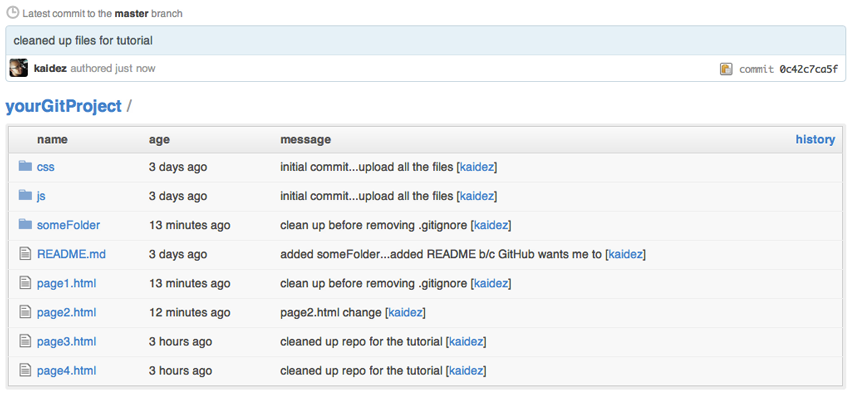 - Now let’s look at our file in Terminal. There are hidden files and directories (the ones that start with a “.”) and we want to look at those files as well. We need to tell Terminal to list all of our files and do so by typing in
ls -laand hitting Enter. 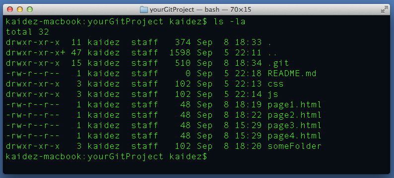 - Note that
.gitignoreisn’t there yet so let’s add it…Typenano .gitignoreinto Terminal and hit Enter.
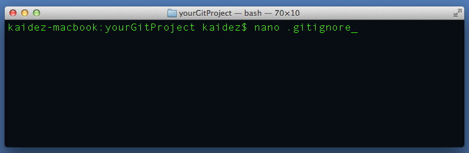 - nano created
.gitignorein our repo and opened it. Now we need to make sure that.DS_Storeis not tracked in our root folder but as a best practice, let’s also make sure that it’s not tracked in our subfolders: “css” and “js”. To do this, type content into.gitignoreso it looks like it does below.
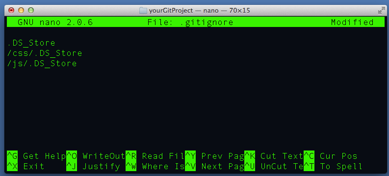 - Start to save it by hitting “Ctrl X”.
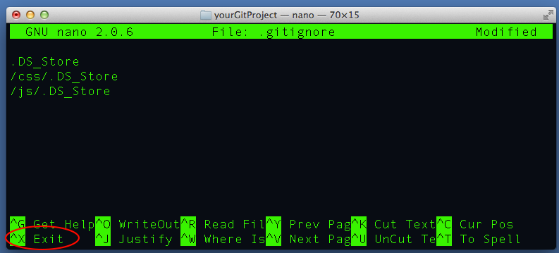 - You’ll receive a prompt at the bottom to save it: type “y” for Yes.
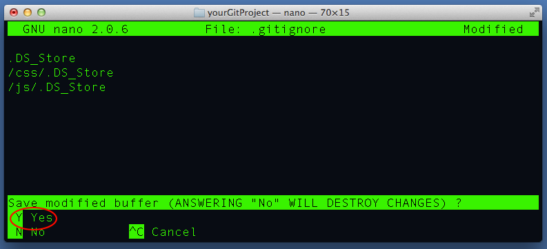 - You’ll receive a prompt to write the file name, i.e., save it with the name “.gitignore”, which you want to do. Hit Enter.
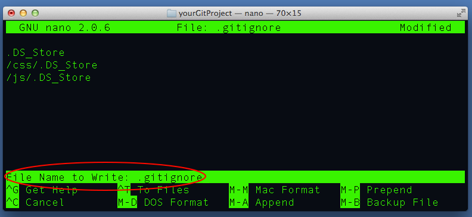 - Type
ls -laagain: you should now see the.gitignorefile.
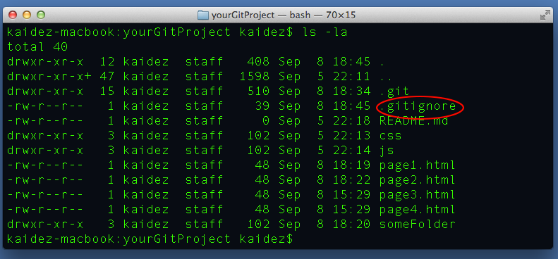 - Now we need to upload it to our GitHub-hosted repo doing the usual add/commit/push thing that we always do. The “add” comes first…type
git add .gitignoreinto Terminal and hit Enter.
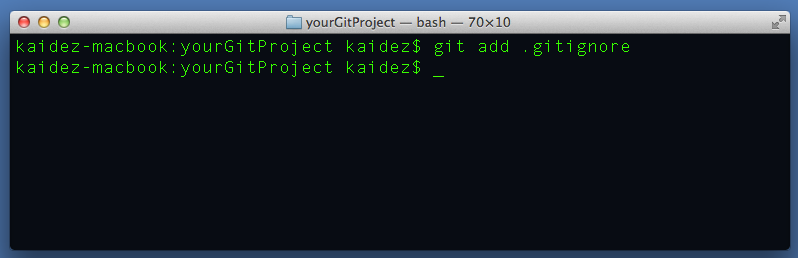 - Now we’ll commit it to our repo with a meaningful commit message…type
git commit -m 'added .gitignore to the repo'and hit Enter.
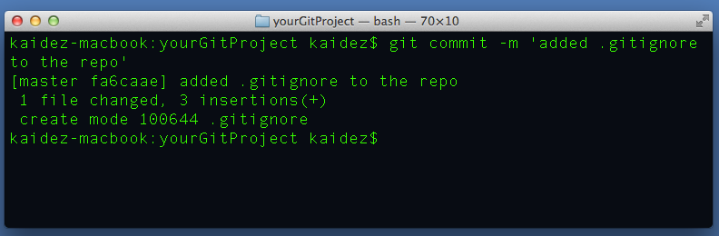 - Now let’s push the change to GitHub…type
git pushand hitting Enter. Then when we check our repo, we see that “.gitignore” is now part of it.
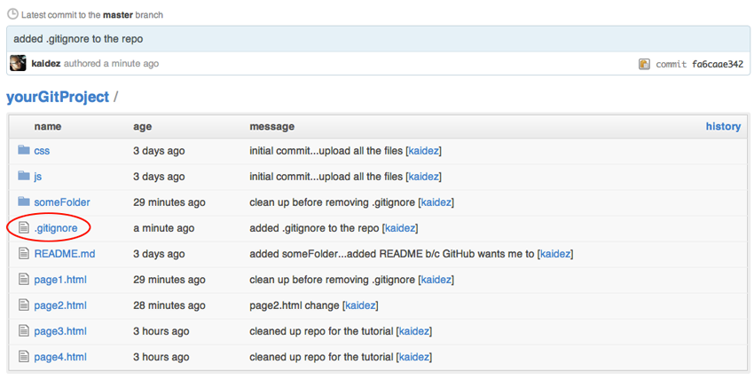
The right way to remove files from GitHub
Now let’s remove a file using rm. Let’s do this to delete the “page1.html” file.
- As a reminder, let’s see what our code repo looks like.
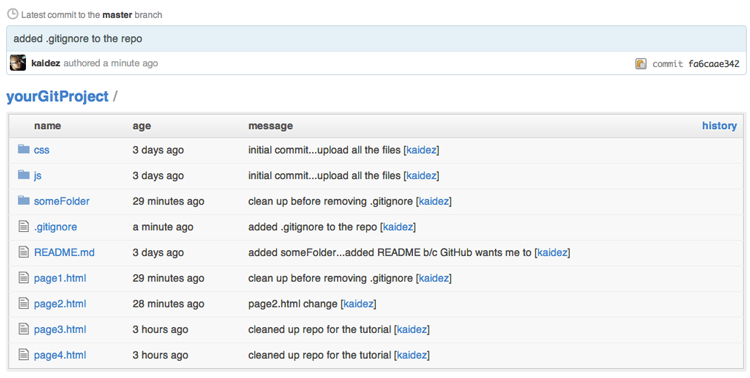 - Tell Git to remove this file by typing
git rm page1.htmland hitting Enter. Git confirms this is done by displaying the messagerm 'page1.html'in Terminal.
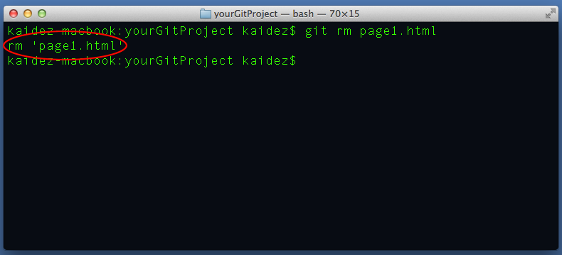 - Let’s review the status of our repo by typing
git statusand hitting Enter. As we can see, “page1.html” has been deleted from our repo folder.
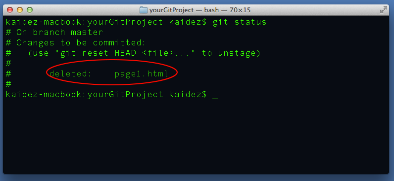 - We can confirm this by typing in
lsand then hitting Enter. Notice that “page1.html” is no longer listed:
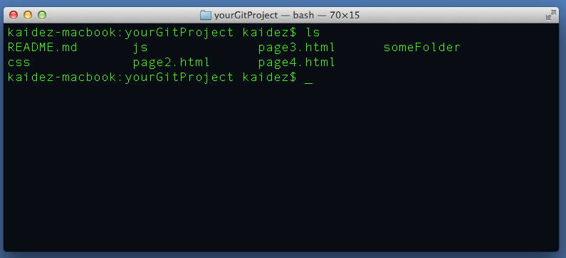 - So let’s commit this deletion…type
git commit -m 'delete page1.html'into Terminal and hit Enter. Note that “page1.html” has been flagged for a delete.
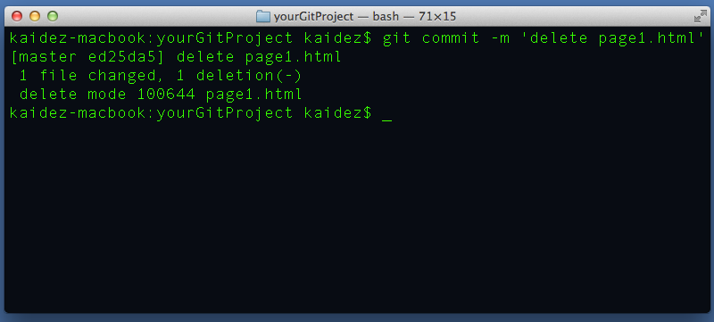 - Next comes the push to GitHub…type
git pushand hit Enter, then check our repo. “page1.html” is gone.

The right way to remove directories from GitHub
The process for removing directories is the same as files, except for one difference. Git views them as a big deal and makes you confirm you want to delete them.
- Let’s go back to our repo on GitHub:
- Let’s delete that “someFolder” directory but let’s see what’s inside of it first.
As we can see, “someFolder” contains a file called “somePage.html.” This is important because if you want Git to delete directories at the command line level with
rm, they need to contain content…I’ll admit that I’m not sure why this is.
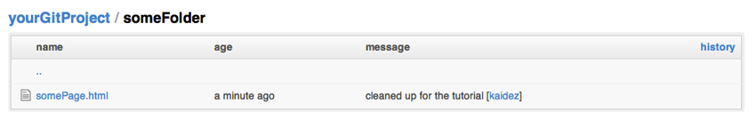 - So to delete “someFolder” from our local repo, we need to “remove it, but forcibly and recursively (i.e., also get rid of everything inside of it).” In the UNIX world, that means we need type
git rm -rf someFolderinto Terminal and hit Enter. Terminal send us message that this is what happened, directly referencing the file inside ofsomeFolder.
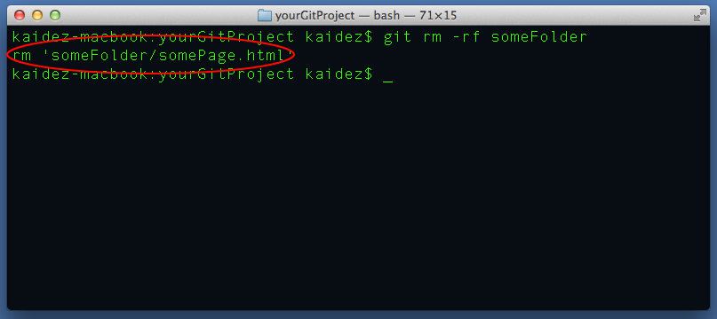 - Now comes the commit…type
git commit -m 'delete someFolder'and hit Enter.
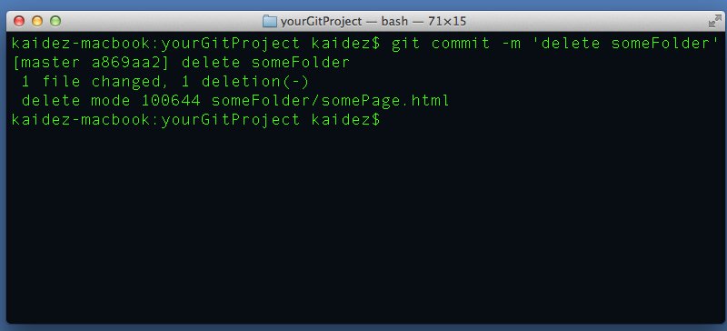 - Now we do a
git push, hit Enter and check our repo. The “someFolder” directory is now gone.
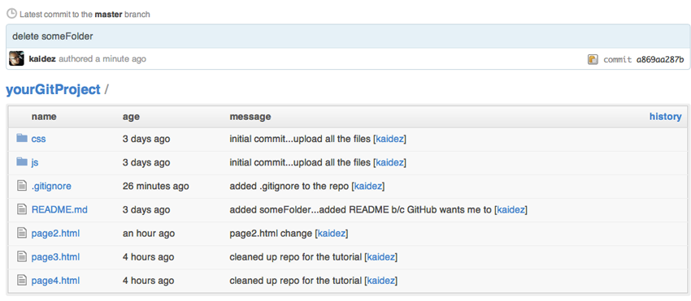
What to do if you’ve already deleted files from your machine and pushed things to GitHub
This is a newbie mistake that I’ve made more times than I can remember. But it’s an easy fix.
- Let’s see what the “status” of our repo is by typing
git statusinto Terminal and hitting Enter. Since we’ve pushed everything, we get a message that there’s nothing to commit for an upload to GitHub.
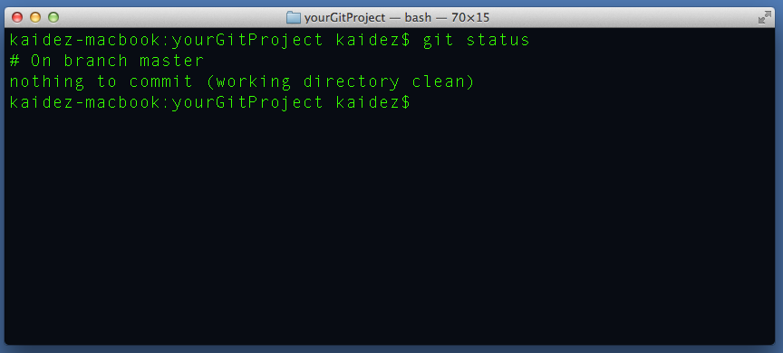 - Now let’s drag “page2.html” to the Trash, then do another
git statuscheck. We didn’t send out any Git commands, but Git is tracking the file anyway (side note: if you didn’t do the .gitignore part previously mentioned, you may see a reference to “.DS_Store” now).
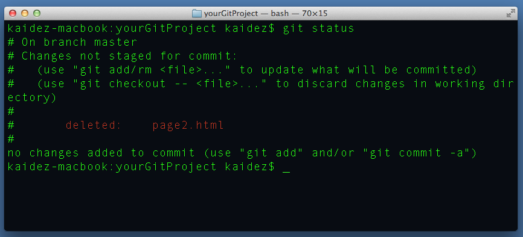 - We need to “tell” Git that this file needs to be removed, and can do so by sending out a “remove” command again. Type in
git rm page2.html, then hit Enter. We get another message that page2.html has been removed like we did in a previous example.
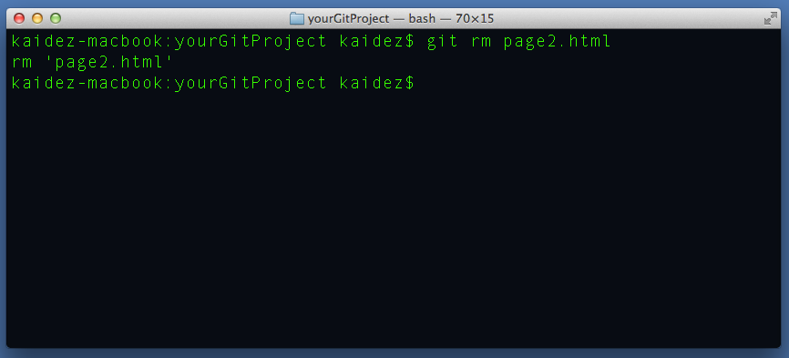 - And when we do
git statusagain, we’re told that the file is ready to be committed.
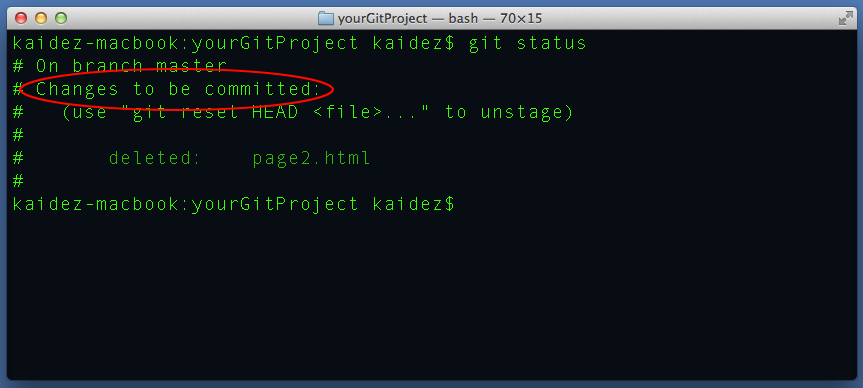 - So let’s commit it: type in
git commit -m 'delete page2.html'and hit Enter.
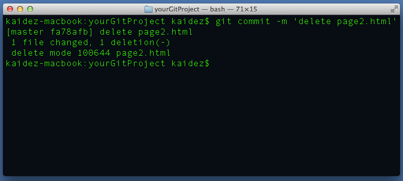 - Finally, we do a
git push, hit Enter and check our repo. “page2.html” is gone.
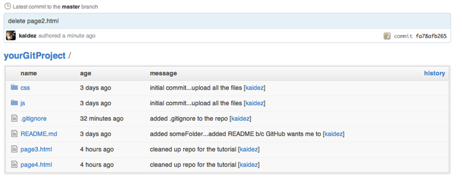
Further Reading
This tutorial focused on how Git handles file and directory deletion but there’s more to Git than that. From a beginner’s level, here are some great learning resources:
The Git Site »
Obviously your first stop. The site went through a major redesign a few months ago, greatly improving the UI. Documentation and downloads are much easier to find and read.
Try Git »
If you need your hand held a bit when first learning Git (which is not a sin), you can check this site out. Sponsored by Code School, Try Git is a Codecademy-styled learning tool that takes you through some Git commands and processes that you may not be familiar with.
GitHub Training »
One of the reasons that GitHub has become popular is the same reason that Chris Coyier and Paul Irish have become popular: their desire to share as much knowledge as humanly possible. While some of the training things they offer cost money, they offer many things for free. Check out their Free Resources section as well as their Online Training and Events sections. For the last two, some things are free and some are not, but I think they’re reasonably priced.
Common Git Commands »
UK-based developer Kerry Gallagher put together a really useful list of Git commands. Print it out and tape it to the wall by your computer.
“Git Is Simpler Than You Think” by Nick Farina »
If you really want to know how Git works, check out this excellent post. Nick Farina opened Git up and spent a lot of time looking at its internal structure. Lots of great info in this post.
“What is Version Control: Centralized vs. DVCS” by Giancarlo Lionetti »
I really want you to understand that Git is a distributed version control system as well as understand what that means. It’s the part that makes sharing code via GitHub a snap and, let’s be honest, a major reason behind their success. Lionetti provides the most in-depth, easy-to-understand article on the subject that I could find.
Pro Git by Scott Chacon »
The Git Book, and it’s free! It’s a little dense and doesn’t flow as easily as these other resources…I’ll admit that I haven’t read all of it. But I have read enough of it to know that it’s an important Git resource.
Conclusion
I hope you understand all the various ways to remove files from GitHub and learned some new Git stuff in the process. At the same time, I hope you’ve come to realize that the title of Farina’s post is correct: Git is simpler than you think. The only thing that will keep you from learning Git is any fears you have of the command line. Get rid of that and you’ll discover how bloody useful Git can be, along with a ton of other things.